这周二，句子第四期新兵训练营。Day 2 下午，我给新来的 FDE 讲了一个小时：什么是 FDE。
新兵训练营是我们让 FDE 快速上手的培训体系，一期五天，从在句子怎么做事、产品能力，到真实成交案例、交付实战，一期带一批新人进来。
这不是岗位说明书。是想让每个人知道一件事——你这周开始学的东西，是今天全世界的 AI 公司花百万美金在抢的能力。我们 2023 年就在干，比硅谷早三年。
这堂课也不只讲给 FDE。FDE 不只是一个岗位，更是一种能力——在 AI Native 的公司里，人人都要有。做商业化、做产品、做研发，都一样。
听众三十个人，岗位很杂：FDE、管培生、做商业化的、研发的、产品的，还有香港来的实习生。我讲了四件事：FDE 是什么、为什么偏偏是现在火、为什么你稀缺、你的路能走多远。
事都是真事，不是编的。涉及同事的地方，对外这一版我把名字都换成了化名。
下面是全部内容，一页一页放上去。
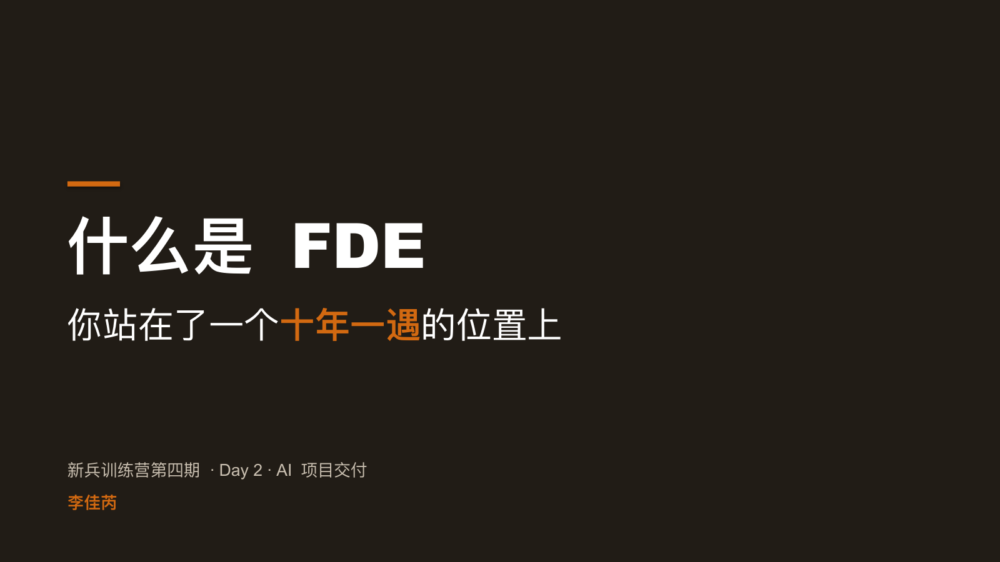


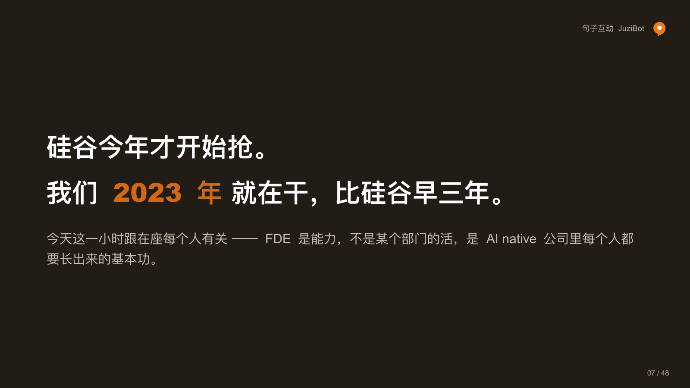


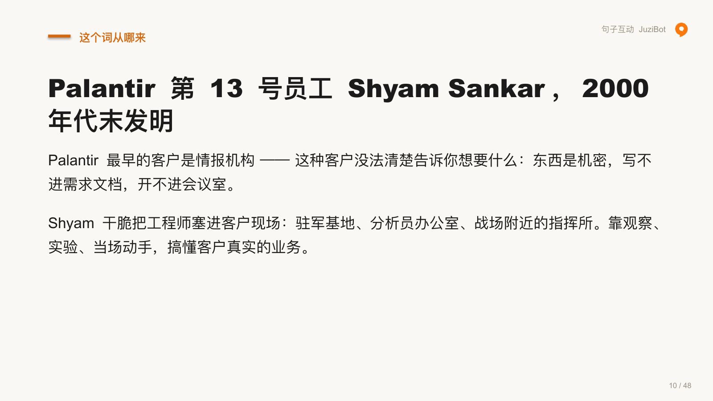


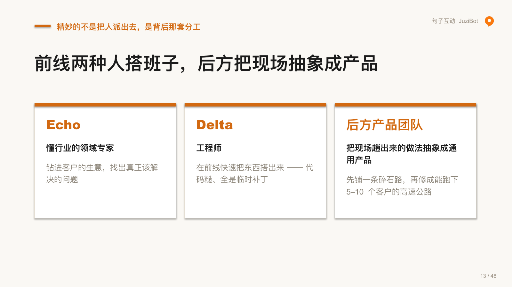


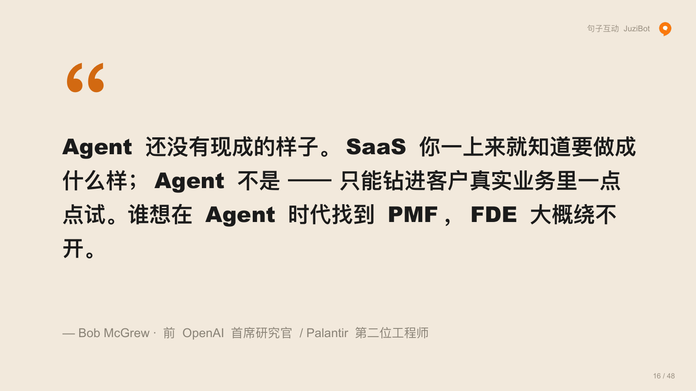

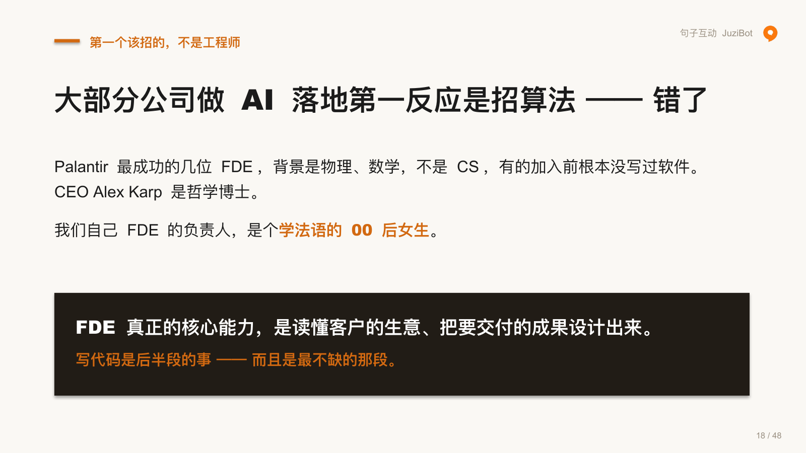

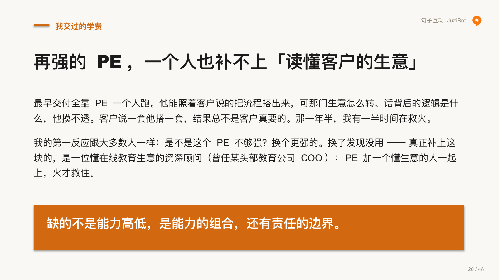

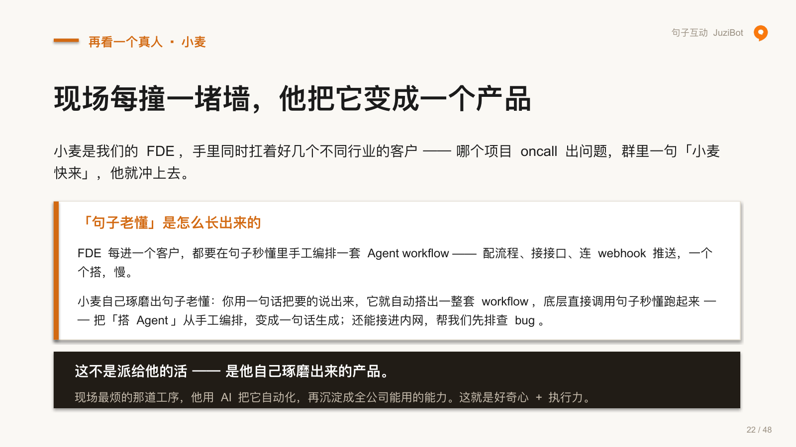

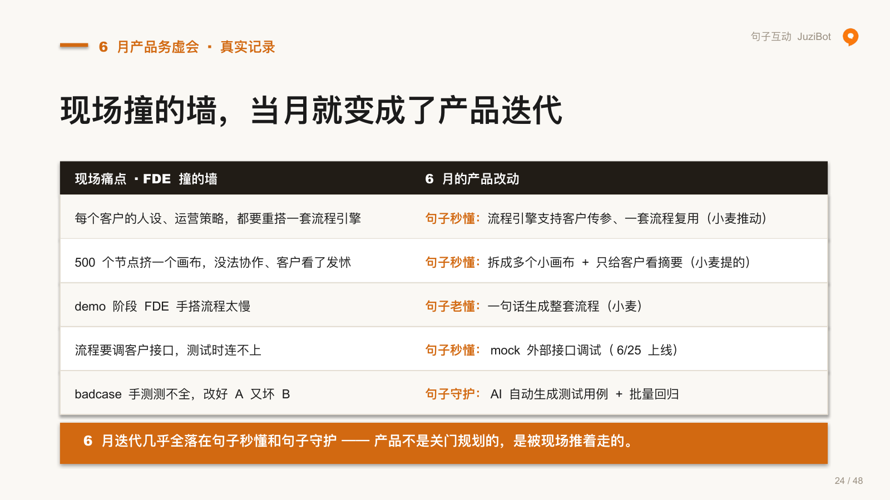


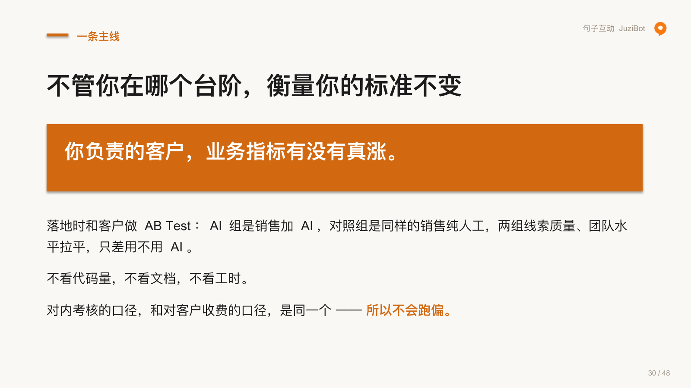


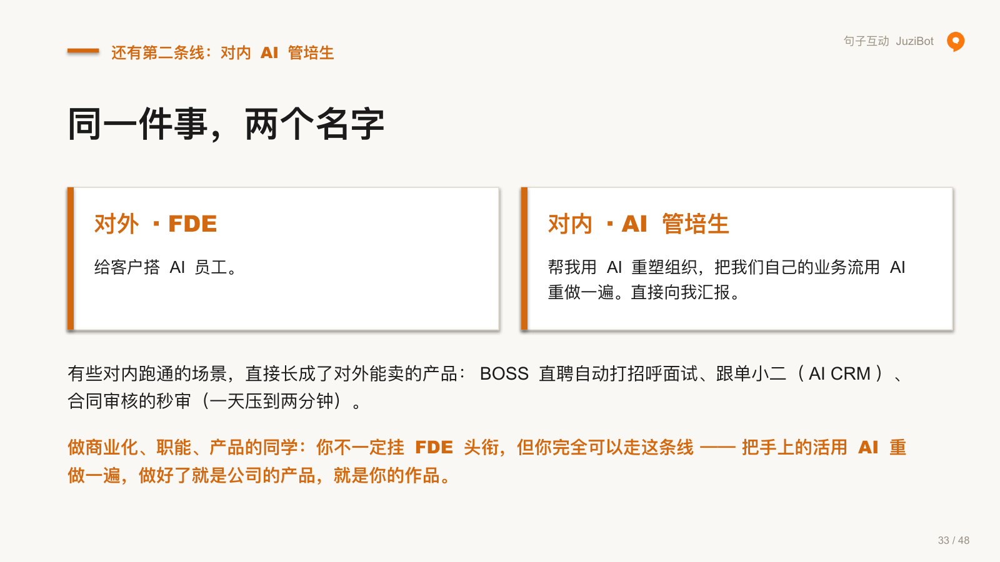
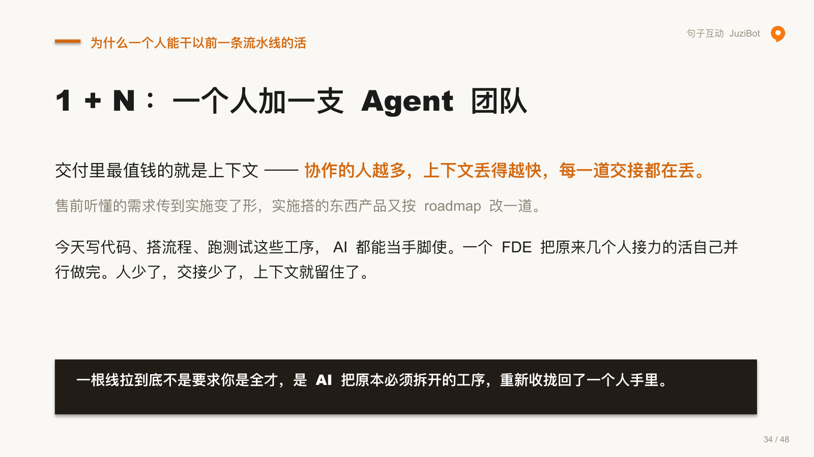
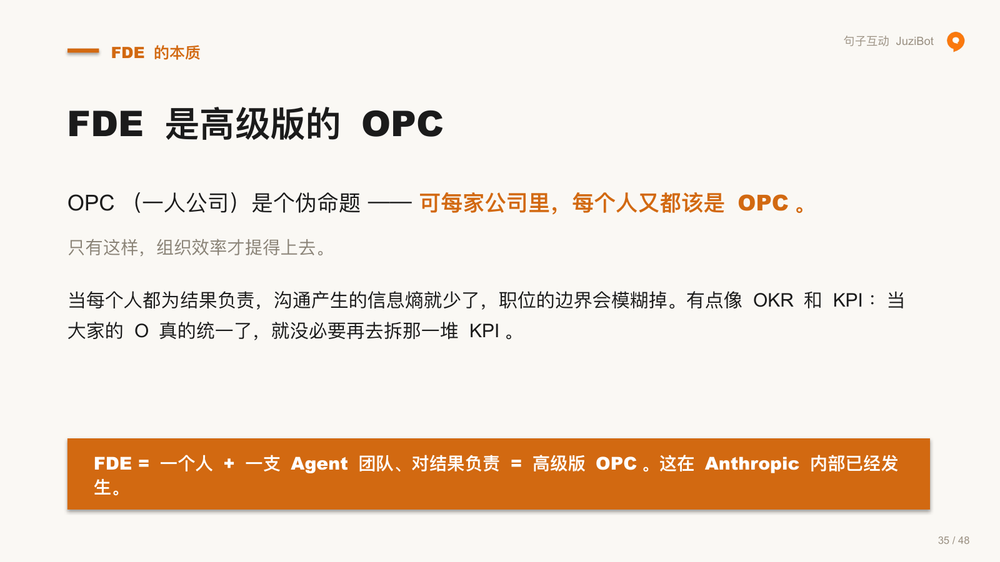

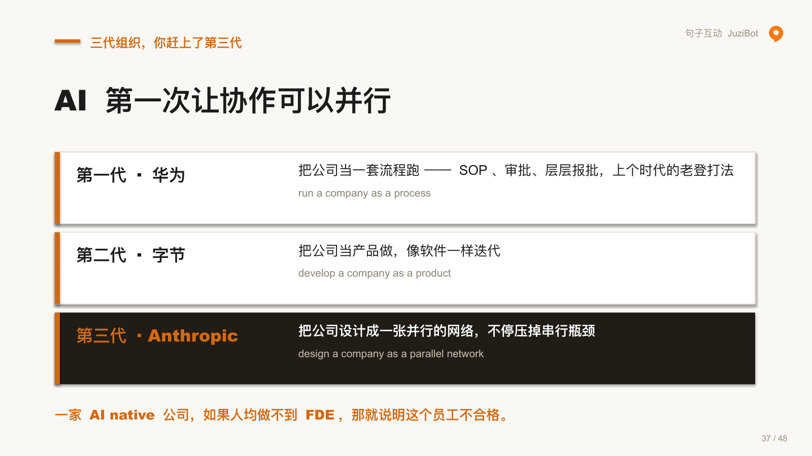

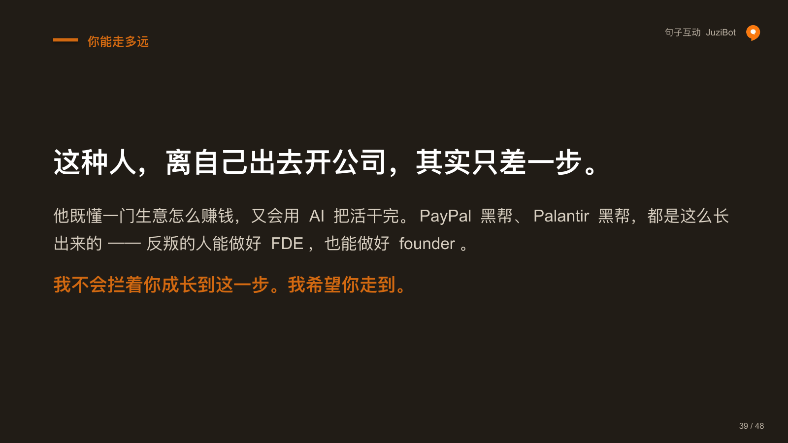

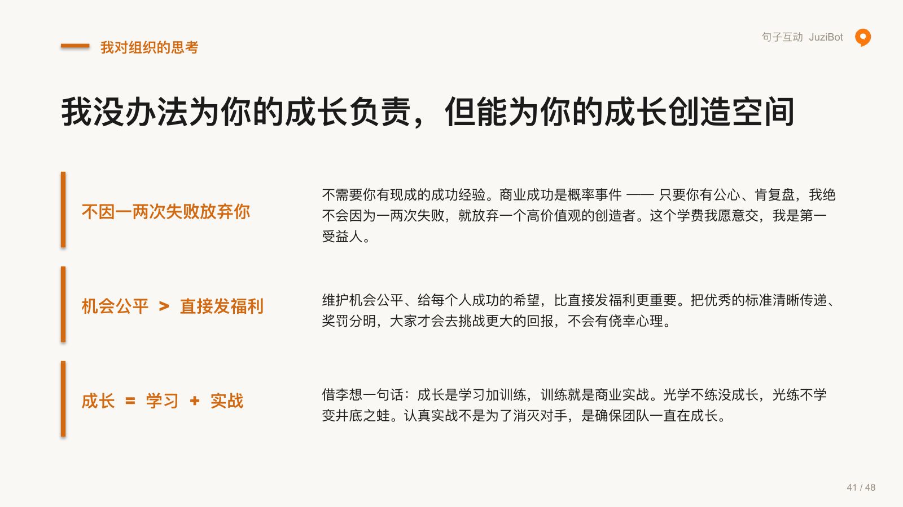


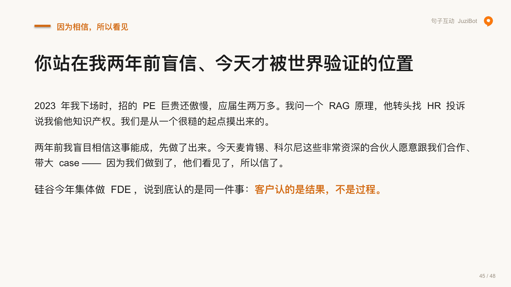


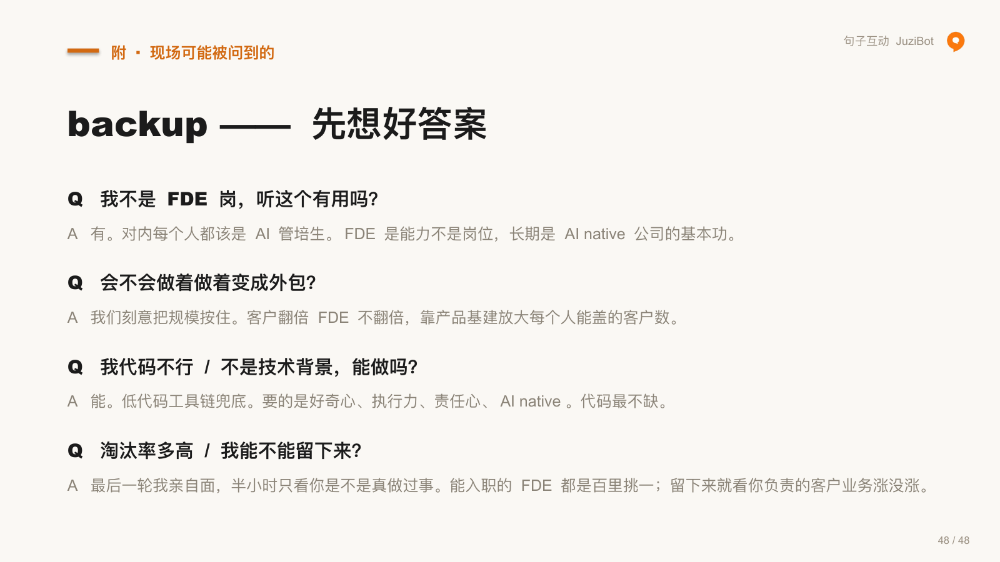